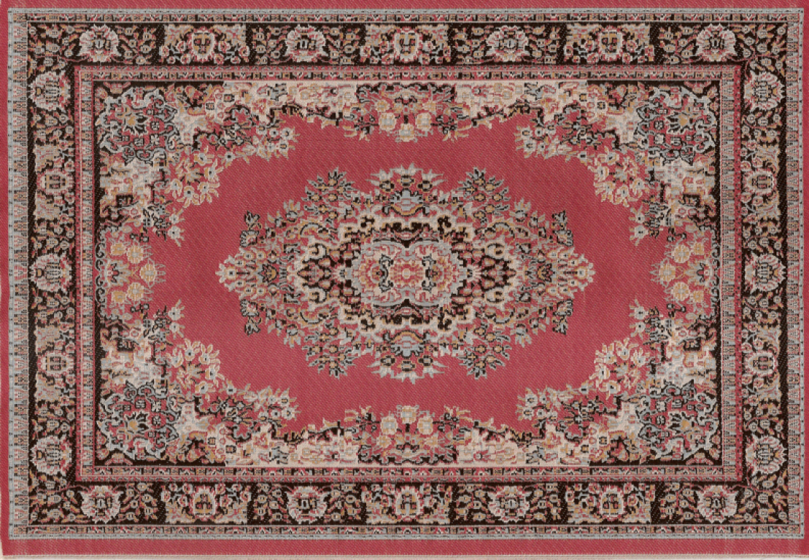

Домашняя страница
О разработчике
Тестирование
ВСЕ КАК У ЛЮДЕЙ
Это домашняя страница веб-приложения,тут пользователь может спокойно полюбоваться ковром,ведь ковер на стене это по родному.Отсюда и заголовок сттраницы "Все как у людей". И отсюда можно перейти к странице для прохождения теста.

Перейти к тестированию